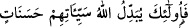
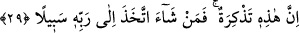

Yâni onları helâk ettikten sonra yerlerine onların benzerlerini getiririz. “Tebdil” kökü
çoğunlukla iki aded mef’ûl alır. Bunun, “
/Allah onların
kötülüklerini iyiliklere çevirir” (el-Furkan, 25/70) âyetinde örneği görmek
mümkündür. Allah, o kötülüklere bedel olarak iyilikleri getireceğini haber vermektedir.
Tefsirini yaptığımız âyette; “hem de onların yerlerine benzerlerini, hiç kuşkusuz, eşsiz
bir biçimde getiririz” buyrulmaktadır. Bu da “izâ” zaman edâtının işâret ettiği üzere
“öldükten sonra dirilme”dir. İlk yaratıştaki benzerlik ancak mafsalların sağlam
yaratılması ve asli unsurlar itibariyledir. Ancak bu benzerlik, letâfet ve kesâfet gibi
ârizî durumlar hasebiyle ayrılığa ve başkalığa zıd değildir.
Yaratma konusunda onları emsâlleriyle tebdil ederiz. Yâni onları öldürürüz, ikinci
yaratılışta bu sûret ve hey’ette yeniden yaratırız.
Bu âyet-i kerîmeyi şu şekilde anlamak da mümkündür: “Dilediğimiz zaman onların
yerlerine Allah’a itâat eden başkalarını getiririz.” Bu mânâyı, şu meâldeki âyet te’yid
etmektedir: “Eğer (gerektiğinde savaşa) çıkmazsanız, (Allah) sizi pek elem verici
bir azap ile cezâlandırır ve yerinize sizden başka bir kavim getirir.” (et-Tevbe,
9/39)
Âyet-i kerîme bir korkutma ve gözdağı verme anlamı ifâde etmektedir. Burada
bahsedilen benzerlik şeklîdir. Bu benzerliğin oluşu, amel ve itâat bakımından gayrılığa
aykırı değildir. Âyetteki “izâ” edâtı, Allah’ın “onları giderip yerlerine başkalarını
getirme” noktasındaki gücünü ve kuvvetini hükme bağlamaktadır. Böyle olmasaydı,
getirilmesi gereken edat “in” olurdu. Çünkü “in” edâtı, henüz vukû bulmamış şeylerin
başına gelir. Bizim örneğimizde de bahsedilen “tebdil” işi henüz vuku bulmuş değildir.
Kâşânî bu âyet-i kerîmeyi şöyle yorumlamaktdaır: Biz onların istidadlarını belli
etmek sûretiyle onları yarattık. Ezelî mîsak ve hakîkî ittisal ile onları takviye ettik.
Fiillerini bizim fiillerimizle selbetmek, sıfatlarını bizim sıfatlarımızla silmek, zâtlarını
bizim zâtımızla ifnâ etmek, dilediğimizde onları benzerleriyle değiştirmek sûretiyle
değiştiririz.
29. Şüphesiz ki bu bir öğüttür. Artık dileyen Rabbine bir yol tutar.
“Şüphesiz ki bu” sûre veya buradaki âyetler “bir öğüttür.” Yâni ebedî mutluluğun
elde edilmesinde kaçınılmaz olan şeyleri hatırlatan bir öğüttür. Burada görüldüğü üzere
sûre veya âyetler öğütün bizâtihi kendisi kılınarak mubalağalı bir anlam elde edilmiştir.
Bir tefsire göre; Ehl-i beytin îsâr ve tasadduk etme konusunda yaptıkları, mü’minler
için ibrettir/öğüttür. Zira bu şekilde amel ederlerse onun benzeri mükâfatı onlar da elde
ederler.